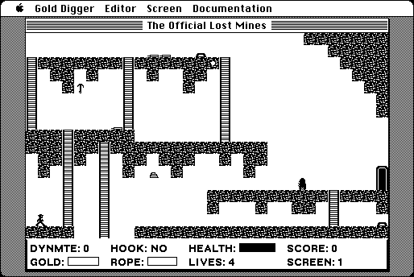

Download
gold_digger_1.3.1.zip (664K) Gold Digger: The Lost Mines 1.3.1 repackaged into a zipped hfs disk image and checksum file. The disk image can be mounted with Mini vMac.
gold_digger_1.3.1.hqx (971K) Gold Digger: The Lost Mines 1.3.1 in the original format.
copyright: T&T Software
mod date: Jul 6, 2004
license: shareware
official url :
T&T Software - Gold Digger: The Lost Mines for Macintosh
"Classic-style, multi-screen platform game with a well-designed balance of strategy and arcade-style action." For "System 6.0.3 or later".

If you find these downloads useful, please consider helping the Gryphel Project, which hosts them.
Here are the md5 checksums for the downloads, signed with Gryphel Key 5:
--------- GRY SIGNED TEXT --------- 75a8734454ac9786158b94272778a1d1 gold_digger_1.3.1.zip 719bf0bf4ab2cd852296761e26fbc043 gold_digger_1.3.1.hqx ------- BEGIN GRY SIGNATURE ------- Gry/4Xa8CFcUzxdN/JKQEAOyXzURwEzdGD/LkU/VvkfbAG0xTzg1MkHnsxAGQKWP U1NEibOP3H9Es+K65AyFOdG8mm1+dFqj4tL+nB5VpSaQs7ZAbCSoOt6Cbfwu8uTr YuH8bGMAaaKxqS6yo+RrpPupgqX4sMtr0eMrBPXhOGp9XH3lh6y0s8RKYUBWz+09 -------- END GRY SIGNATURE --------